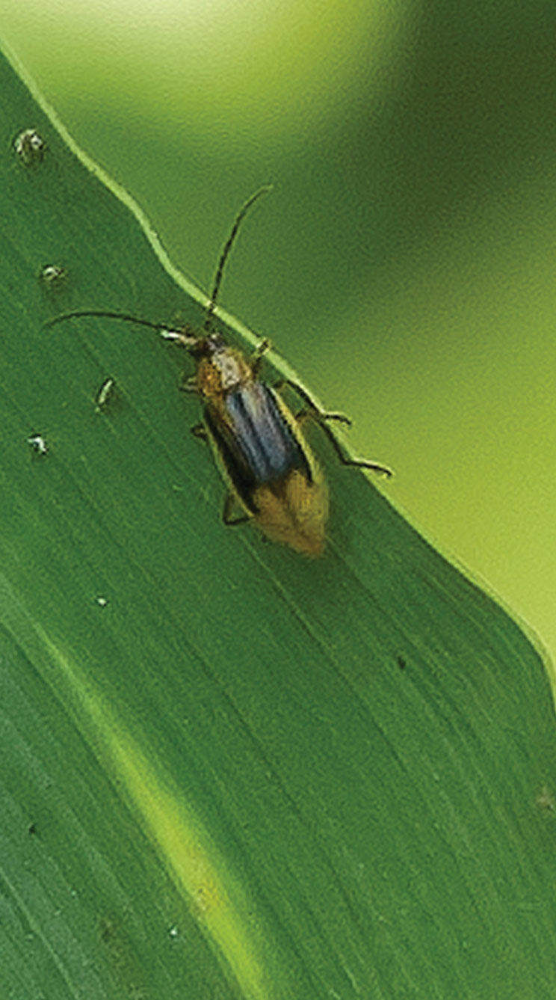

Insect ID Guide
Click the + sign to learn more about each crop insect or download the complete guide as a PDF at the bottom.

Corn Rootworm
Characteristics
- Western species have stripes on wings
- Northern species are tan or pale green
- Southern species (also known as Spotted Cucumber Beetle) have 11 black spots on back
Behaviors
- Feed on roots, limiting water/nutrient uptake
- Larvae often hatch by mid-June
- Adults emerge by early July
- Can be found on plant silks
Black Cutworm
Characteristics
- Can be confused with the less-damaging Dingy Cutworm
- Grainy skin ranging from light gray to black in color
Behaviors
- Chew holes in leaves
- Cut above ground in wet soil and below ground in dry soil
- Leave missing or injured plants in weedy and low-lying, damp areas
- Larvae feed at night and hide during bright days
Western Bean Cutworm
Characteristics
- Mostly gray or brown
- Forewings have a stripe at the front, two cream-colored shapes behind and a circular spot
- Kidney-shaped mark about two thirds of the way down the wingtip
Behaviors
- Feed and lay eggs on the tips of corn ears
- Lay egg masses on top of upper leaves

European Corn Borer
Characteristics
- Mostly gray or brown
- Dark, wavy bands across wings during moth stage
Behaviors
- Chew tunnels through corn plants
- Moths lay eggs under leaves, leaving larvae rolled up in whorls
True Armyworm
Characteristics
- Orange line with white edges on each side
- Large, dark spot at the base of proleg
Behaviors
- Feed on leaf tissue
- Break out during cool, wet springs
- Often found in no-till fields, rye grass cover crops or high grassy weed populations
All photos are either the property of Syngenta or are used with permission.
By providing your e-mail address you are agreeing to receive e-mail communications from Syngenta. We promise to never sell your e-mail address to a third party. Visit http://www.syngenta-us.com/legal/privacypolicy.html for the Syngenta privacy policy.